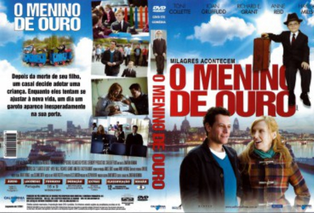

O Menino de Ouro (2011)

A feel good family fairy-tale

Avaliação (TMDb):


6.8/10 (84 votos)
Avaliação (Usuário):
Outro Título:Foster
País:United States, 90 minutos
Idiomas falados:Inglês, Português
Gênero(s):Comédia, Drama, Família
Diretor(s):Jonathan Newman
Codec:MPEG-2 (DVD)
Número: 2620
Sinopse:
Depois da morte de seu filho, um casal decide adotar uma criança. Enquanto eles tentam se ajustar à nova vida, um dia um garoto aparece inesperadamente na sua porta.
Elenco:
Toni Collette, Ioan Gruffudd, Maurice Cole, Richard E. Grant, Anne Reid, Hayley Mills, Barry Jackson, Daisy Beaumont, Tim Beckmann, Bobby Smalldridge
Tipo de mídia: DVD5,
Legendas: Português
Alugado: Não
Tela: 16:9 Widescreen